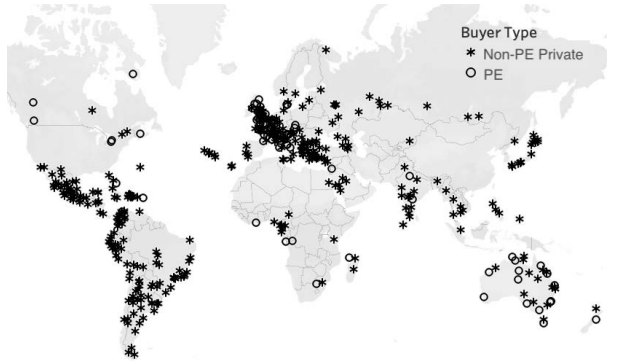

In Ottawa's emerging asset-recycling agenda, Canada's airports sit at the center of a rare fiscal temptation: mature public infrastructure with private-market valuations large enough to fund a generation of national projects, and governance risks large enough to repeat the Highway 407 mistake at federal scale.
In 2021, a consortium of pension funds and institutional investors bought Sydney's Kingsford Smith Airport for 23.6 billion Australian dollars. The following year, the French construction and infrastructure giant Vinci paid £1.27 billion roughly $2.35 billion Canadian for a fifty-per-cent stake in Edinburgh Airport, Britain's sixth-busiest. In 2024, a partial ownership stake in London Heathrow changed hands at a valuation of £8.66 billion, or approximately $16 billion Canadian. Toronto's Pearson International Airport handles comparable passenger volumes to Sydney's airport and more cargo. And yet no Canadian pension fund not CPPIB, not OMERS, not Teachers', not any of the eight institutional giants known as the Maple 8 holds a single share in a Canadian commercial airport. They cannot buy equity in the airport authorities themselves under the current non-share-capital model, though Ottawa has already opened narrower channels for private investment through subleases, contracts, and subsidiaries. Ottawa owns the land and leases it to twenty-one airport authorities that operate at arm's length and are structured as not-for-profit, non-share-capital corporations whose surpluses are reinvested rather than distributed to shareholders.
This is the central paradox that Prime Minister Mark Carney's government is now trying to resolve, and the resolution he is proposing will be the most consequential privatization decision in Canadian history since the Mike Harris government sold Highway 407 for $3.1 billion and watched it become worth $30 billion.
I. The Carney Plan: Asset Recycling and the Canada Strong Fund
On April 27, 2026, Carney announced the Canada Strong Fund Canada's first national sovereign wealth fund with an initial federal contribution of $25 billion. The fund would invest alongside the private sector in Canadian projects spanning clean and conventional energy, critical minerals, agriculture, and infrastructure. One day later, the government's Spring Economic Update specified how the fund would grow beyond its initial base: by selling or leasing public assets and redirecting the proceeds into priority infrastructure. The government called this "asset optimization."
The specific language in the 167-page "Canada Strong for All" document was precise on intent if vague on mechanism: "Asset optimization will help address two complementary priorities: unlocking the full value of existing federal assets and directing that capital toward investments with the highest potential return for Canada and Canadians."¹ The 23 federally-owned airports including the country's six busiest, in Toronto, Vancouver, Montreal, Calgary, Edmonton, and Ottawa were listed among the assets the government is "assessing opportunities to unlock." The update said Ottawa would introduce legislation to compel airport authorities and related parties to hand over financial information for valuation purposes, suggesting the process has moved well past idle consideration.
Transport Minister Steven MacKinnon offered a careful summary of the government's position to reporters after the update was released: "We're in the early stages of a process with airport authorities and other partners to determine the best way forward."² That caution was deliberate. The word "privatization" does not appear in the spring economic update at all, even though it appeared explicitly in the November 2025 budget, which promised to "consider options for the privatization of airports." The rhetorical retreat to "alternative models of ownership" reflects a government that has studied the political economy of infrastructure sales and does not want to hand its critics a six-letter grenade before a deal is structured.
The concept Carney has embraced has a name: asset recycling. Under this model, mature cash-generating assets airports, toll roads, power grids, ports are sold or leased to private investors in exchange for an upfront payment. The government then deploys those proceeds into new infrastructure that the private sector would not fund on its own: transit lines, hospitals, bridges. The theoretical appeal is considerable. Ottawa captures value from assets that currently sit on its books as underperforming balance-sheet entries, and redirects that capital toward investments that generate broader social returns. Economists at the Bank of Nova Scotia estimated that opening as little as five per cent of Canadian government-owned infrastructure to private capital could unlock between $25 billion and $50 billion; a more ambitious program, they argued, could raise more than $100 billion.³ Roughly half of Canada's $470 billion in government-owned infrastructure roads, rail, bridges, ports, airports, utilities, and pipelines would suit pension fund investors based on their investment profiles, the bank found.
The pension funds already know this. Senior executives at several of the Maple 8 institutions have told the government they are ready to bid on airports, and their stated wish list extends considerably further: nuclear power generation, pipelines, bridges, electricity transmission grids, and port authorities.⁴ Michel Leduc, a senior managing director at the Canada Pension Plan Investment Board, described a hub airport in a G7 country as sitting in the "sweet spot" for institutional investors looking to deploy capital at home large, stable, inflation-linked cash flows, near-monopoly positioning, and long-duration assets that match pension liabilities perfectly.⁵
II. What Is on the Table and What It Might Be Worth
Transport Canada leases 23 airports to 21 not-for-profit authorities. The six major hubs are the financially significant ones; the regional airports in smaller cities are a separate and more complicated question. A 2017 C.D. Howe Institute analysis estimated that selling equity stakes in eight major airports could raise roughly $7.2 billion to $16.6 billion after debt repayment a figure that is almost certainly a floor in 2026 terms, given a decade of passenger growth, capital investment, and the appreciation of infrastructure assets globally.⁶
Comparable international transactions suggest the potential scale. Sydney Airport which handles passenger volumes in the same range as Pearson — sold in 2021 for AU$23.6 billion.⁷ The 2024 partial sale of a Heathrow stake valued the airport at £8.66 billion.⁸ In 2018, Vinci agreed to buy 50.01 per cent of London Gatwick for £2.9 billion, implying a whole-asset value approaching £5.8 billion.⁹ Edinburgh Airport, a much smaller airport, drew £1.27 billion for a fifty-per-cent ownership stake.¹⁰ These are not cherry-picked data points; they represent the market rate for privatized airport infrastructure in comparable economies with comparable regulatory environments. On a rough comparable-transaction basis, a full or partial sale of Pearson alone accounting for Canada's lower population, shorter passenger growth trajectory, and the discount buyers would demand for a politically sensitive asset could plausibly generate $10 to $15 billion. Vancouver International would add several billion more. On a rough comparable-transaction basis, the author estimates the potential value of all 23 federally leased airports could sit somewhere between $25 billion and $40 billion, though no authoritative Canadian appraisal has been published.
Beyond airports, the pension funds have signaled interest in a broader array of federal assets. The Globe and Mail reported that pension executives provided Finance Canada with a wish list including port authorities, bridges in need of refurbishment, pipelines, toll-capable highways, and utilities serving military bases.¹¹ Not all of these are equally straightforward candidates. Ports are subject to complex regulatory frameworks and community agreements. Pipelines carry geopolitical sensitivities that airports do not. But the direction of appetite from institutional investors is unmistakable: they want exposure to Canadian public infrastructure, and they want it at scale.
Table 1. Comparable Airport Privatization Transactions, 2019–2024
| Airport | Transaction Type | Value | Year | Buyer(s) |
|---|---|---|---|---|
| Sydney (Kingsford Smith) | Full acquisition | AU$23.6B | 2021 | Global Infrastructure Partners, IFM Investors, others |
| London Heathrow | Partial stake sale | £8.66B (full valuation) | 2024 | Multiple institutional investors |
| London Gatwick | 50.01% stake acquisition | £2.9B (50% only; ~£5.8B implied whole) | 2018 | Vinci SA |
| Edinburgh | 50% stake | £1.27B (50% only) | 2022/23 | Vinci SA |
| Stansted (UK) | Full acquisition | ~$2.4B (2013 transaction) | 2013 | Manchester Airport Group / IFM |
Source: Globe and Mail (2026); Airport Technology; Frontier Economics (2019); Open Jaw (2026); Financial Post (2026).
III. The Proponents' Case: Capital, Capacity, and the NSW Blueprint
The government's argument for asset recycling is not inherently unreasonable. Canadian airports need money. Terminal expansions, runway upgrades, baggage automation, transit connections, and security modernizations collectively cost billions, and the not-for-profit model that has governed airport operations since the early 1990s constrains capital access. Andras Vlaszak, a senior director in global infrastructure advisory at KPMG Canada, told Benefits and Pensions Monitor that privatization "frees up public capital," though he cautioned that whether freed capital ends up in high-productivity investments or absorbed into general government spending is a separate and determinative question.¹²
The international evidence on efficiency is more supportive of privatization than critics typically acknowledge. A 2022 study by researchers at the National Bureau of Economic Research examined the performance of 2,444 airports in 217 countries and found that passenger traffic increased by 84 per cent and the number of passengers per flight rose by 20 per cent following private equity acquisition.¹³ Private owners also tended to add terminals and gates more aggressively than public ones. This is consistent with the general logic that private owners, facing capital markets discipline, have stronger incentives to invest in revenue-generating capacity.
The most instructive international example for Canada is not the United Kingdom whose experience is too tangled in its own regulatory history but New South Wales. Between 2014 and 2020, the NSW government raised AU$32.7 billion by leasing mature infrastructure assets most importantly the Transgrid electricity transmission network, sold on a 99-year lease for AU$10.26 billion and deployed the proceeds into new infrastructure that could not have been funded otherwise, including the Sydney Metro, regional roads, schools, and hospitals.¹⁴ The total capital program enabled by the asset recycling proceeds reached $20 billion in new construction, while the state maintained its AAA credit rating throughout. Sebastien Betermier of McGill University's Desautels Faculty of Management has argued that Canada has "much to learn" from NSW on how to structure recycling well.¹⁵
The NSW success, however, was not accidental. The state created an independent oversight body Infrastructure NSW staffed by professionals with private-sector experience and governed by a board with sufficient independence to resist political pressure to fund low-priority projects in marginal constituencies. Proceeds were deposited into a dedicated fund called Restart NSW, ring-fenced from general revenue. And crucially, the government retained ownership of assets even as it leased operating rights. The success was structural, not ideological. It depended on institutional design that Canada has not yet demonstrated any intention of replicating.
IV. The 407 Warning: Canada's Most Expensive Lesson
Before accepting the optimistic case for asset recycling, any honest accounting must begin with the worst privatization deal in Canadian history.
In April 1999, the Ontario government of Premier Mike Harris leased Highway 407 a 108-kilometre electronic toll road running across the northern edge of the Greater Toronto Area to a Spanish-led consortium for $3.1 billion on a 99-year term. The deal was structured around a budget need, not an infrastructure logic: Harris was heading into an election, facing an $11-billion annual deficit, and the highway sale provided an immediate cash injection that allowed him to fund a simultaneous tax cut. The contract granted the consortium unlimited power to raise tolls, subject only to traffic volume thresholds, with no regulatory cap. The Ontario government also agreed critically to block provincial licence plate renewals for drivers with outstanding toll debts, effectively weaponizing a public administrative function on behalf of a private corporation.
Within a year of the sale, toll rates had risen by as much as 50 per cent depending on the time of day. By the end of 2001, there had been four separate price hikes and mounting public complaints about customer service.¹⁶ The highway that cost $1.5 billion to build was sold for $3.1 billion; a 2019 partial stake sale by SNC-Lavalin just 10.01 per cent of the consortium valued the entire highway at over $30 billion.¹⁷ A further 2025 transaction, in which AtkinsRéalis sold its remaining 6.76 per cent stake for roughly $2.6 billion to $2.79 billion, implied a whole-asset valuation closer to $40 billion. The Ontario government had transferred to private investors an asset worth more than ten times what it received, with no mechanism to recapture value, no toll regulation, and a 99-year term that will not expire until 2098.
The Ontario Ministry of Transportation eventually acknowledged the failure. In 2012, a ministry spokesperson confirmed that "important lessons" had been learned from the 407 experience chief among them that the province must retain public ownership of any tolled highway and that toll rates cannot be left entirely to the discretion of the concessionaire.¹⁸ This acknowledgment came thirteen years after the damage was done. The lesson embedded in that sequence act first, acknowledge failure later is the political economy of privatization in miniature. The upfront revenue lands in the election cycle; the cost compounds over decades.
The 407 is not an isolated Canadian example. It sits in a larger pattern.
V. The International Record: What the Evidence Actually Shows
The United Kingdom privatized its major airports in 1987, selling the British Airports Authority as a single publicly traded entity BAA plc including Heathrow, Gatwick, Stansted, and four Scottish airports. For the first twenty years, the regulatory framework was inadequate: BAA was permitted to charge fees on a systemwide basis across all its London airports, which allowed it to cross-subsidize Stansted's aggressive expansion using Heathrow and Gatwick's captive revenue. When Ferrovial, the Spanish construction multinational, acquired BAA in a £10 billion leveraged takeover in 2006, the consequences for passengers were sharp. Giovanni Bisignani, then director general of the International Air Transport Association, described Heathrow's condition in 2008 as a "disaster." He warned a Japanese audience against repeating the same mistakes, observing that failed regulation had permitted a 42 per cent profit margin while passengers endured terminal conditions he characterized as a national embarrassment.¹⁹
The Competition Commission ordered BAA's break-up in 2009 twenty-two years after privatization mandating the sale of Gatwick, Edinburgh, and Stansted to separate owners to introduce competitive pressure. The academic record on the BAA period found that while private ownership raised revenue per passenger and improved labour productivity, it also increased cost per passenger and, in the view of some researchers, delayed infrastructure expansion by entangling runway development decisions in commercial disputes between competing private owners.²⁰ Airport privatisation scholar Anne Graham, reviewing thirty years of global experience in a 2020 paper, concluded that privatization's efficiency gains are real but contingent dependent on the regulatory and competitive environment in ways that governments have consistently underestimated at the point of sale.²¹

The United States has maintained predominantly public ownership of its commercial airports, and the American example is relevant not as a model to emulate but as a control group. The UK Civil Aviation Authority has been reviewing regulated airport charges at Heathrow in the range of £28 to £29 per passenger for the 2027–2031 period charges that passengers ultimately pay through airline ticket prices.²² American publicly-owned hub airports operate under a different regulatory and ownership logic: charges are set by airport authorities accountable to municipal or state governments with an explicit public-interest mandate, not by private owners maximizing return on capital. The difference reflects not efficiency but ownership incentives. A family flying from Toronto Pearson cannot comparison-shop to an alternative major airport the way a consumer can switch between grocery chains. This market structure which economists classify as a natural monopoly means that the standard efficiency arguments for privatization apply with much less force to airports than to industries where real competition disciplines pricing.
VI. The Structural Problem: Monopoly, Regulation, and the Regulatory Gap
The fundamental tension in airport privatization is that the assets make ideal investment targets precisely because of the characteristic that makes them dangerous to privatize without regulation: they cannot be meaningfully competed against. A pension fund seeking stable, inflation-linked returns for thirty or forty years wants an asset with pricing power over a captive user base. That is a rational investment preference. It is also a description of a monopoly. And monopolies, once transferred to private hands, require external regulatory constraints of sufficient robustness to substitute for the competitive discipline that does not exist.
This is the gap in Carney's current framework that no announced policy has yet filled.
The spring economic update introduces legislation to compel airports to provide valuation information. It does not announce a price regulatory regime. It does not establish an independent airport economic regulator comparable to the UK's Civil Aviation Authority. It does not specify what Canadians will pay for airport improvement fees, aeronautical charges, or terminal access fees after any ownership transition. Toronto Pearson charged departing passengers $35 in airport improvement fees in 2024, $37 in 2025, and currently lists the fee at $40 plus applicable taxes.²³ That fee, paid by travellers who have no alternative, is set by a not-for-profit authority with public interest obligations. A for-profit owner with a long-term lease and no regulatory cap will face entirely different incentives.
Not all serious observers support full privatization on these grounds. James Moore, a former federal cabinet minister who served in the Harper government, has argued publicly that Canada's not-for-profit airport authorities already operate at arm's length from government, reinvest their surpluses directly into infrastructure, and are subject to public interest obligations that for-profit ownership would eliminate.²⁴ Moore's concern focuses particularly on regional airports: under a for-profit model, secondary airports serving smaller communities could face reduced service, higher fees, or in extreme cases closure if traffic volumes fail to generate acceptable returns for institutional investors. Monette Pasher, president of the Canadian Airports Council, stated the industry's position carefully: "There are many ways to work with pension funds and equity partners, and any options government considers must have affordability for Canadians as the top priority."²⁵
This is a substantive criticism, not a reflexive one. The NBER study that found an 84 per cent increase in passenger traffic under private equity ownership also found that the rise in privately-owned airports correlated with higher fees to airlines and a push to deregulate government controls on pricing.²⁶ Efficiency and cost are not the same metric. Airports can carry more passengers, add more terminals, and generate higher margins simultaneously and all three can be true while Canadians pay significantly more to use them.
VII. The Regulatory Architecture Canada Must Build Before It Sells
The question Canada faces is not whether to privatize the political and fiscal momentum behind Carney's plan appears durable but whether it can construct the regulatory architecture necessary to prevent the standard pattern of infrastructure privatization: short-term government revenue, long-term public cost.
The NSW case offers a template, but its success rested on three specific institutional choices that Canada has not replicated. First, NSW created Infrastructure NSW as an independent, professionally staffed body responsible for evaluating assets before sale, managing the proceeds, and allocating capital to priority projects based on independent cost-benefit analysis. Second, the state deposited all recycling proceeds into Restart NSW a dedicated, legislatively protected fund that politicians could not raid for electoral purposes. Third, NSW retained ownership of the underlying assets even as it transferred operating rights, preserving the right to renegotiate or reclaim assets when lease terms expire or performance obligations are breached.
Canada currently proposes to move airport valuation information into government hands through new legislation, and to channel some recycling proceeds into the Canada Strong Fund. These are necessary but not sufficient steps. The Canada Strong Fund's mandate, structure, and governance remain undefined an admission the government itself made in the April 27 announcement, noting that "further details" would follow "in the coming months."²⁷ The history of Canadian public finance institutions does not inspire confidence here. The Canada Infrastructure Bank, established in 2017 with a mandate to invest alongside private capital, received a $35-billion budget raised to $45 billion in the November 2025 budget and has consistently struggled to deploy capital at the pace or scale originally envisioned. When asked how the Canada Strong Fund would differ from the Infrastructure Bank, Carney said the bank primarily provides loans while the new fund would hold equity stakes. This distinction, while real, does not address the governance and deployment questions that have complicated the bank's operation.
Ryan Kuruliak, a specialist in infrastructure finance, summarized the structural risk precisely: privatization "creates an opportunity to advance on those items, but it doesn't necessarily mean it will. It all depends on what the freed-up capital gets then used for."²⁸ That sentence describes the mechanism by which every asset-recycling program either succeeds or fails. NSW succeeded because it built the institutional machinery to answer that question before it sold anything. Ontario in 1999 did not.
Conclusion: The Deal Is Already Being Made; the Architecture Is Not
Canada's airports are now formally under review for sale, lease, or minority equity participation, and the political conditions for a transaction are more aligned than at any point in the past three decades: a federal government with a strong majority mandate, pension funds with hundreds of billions in capital looking for domestic deployment opportunities, a geopolitical environment that makes infrastructure sovereignty salient, and a fiscal constraint that makes $3.1 billion in upfront revenue or $17 billion, or $40 billion genuinely attractive.
The issue is whether Canada's government, having decided to recycle its infrastructure assets, will design the transaction to capture long-term public value or merely generate short-term federal revenue. The historical record of such decisions in Canada, in the United Kingdom, in countries from Argentina to India is that governments consistently undervalue the assets they sell, consistently underestimate the regulatory capacity required to protect public interests, and consistently discover the cost of these errors on a timeline that falls after the election that made the deal politically convenient.
The 407 Highway is now worth more than $30 billion. Ontario received $3.1 billion. The lesson is not that privatization is always wrong; it is that a transaction structured to solve a budget problem will almost never be structured to serve public interest. Carney's government has announced the intention to sell. It has not yet announced what it will demand in return not in regulatory terms, not in pricing obligations, not in governance architecture, not in explicit protections for the passengers and communities whose access to public infrastructure will be permanently reshaped by whoever wins the bidding.
That is the conversation Canada needs to have before a single airport changes hands. The speed at which the government moves from "early stages" to signed contract will determine whether this is an asset-recycling success story or the largest 407 in the country's history.
Notes
- Government of Canada, Canada Strong for All: Spring Economic Update 2026 (Ottawa: Department of Finance Canada, April 28, 2026), 167. https://www.canada.ca/en/department-finance/news/2026/04/spring-economic-update-2026.html
- Steven MacKinnon, quoted in "Talk of airport ownership changes in 'early stages,' Transport Minister says," Globe and Mail, April 30, 2026. https://www.theglobeandmail.com/politics/article-airport-ownership-changes-early-stages-transport-minister/
- Scotiabank Economics, cited in "Canadian pensions chase 'built not-to-be-built' as asset recycling heats up," Benefits and Pensions Monitor, March 24, 2026. https://www.benefitsandpensionsmonitor.com/news/industry-news/canadian-pensions-chase-built-not-tobebuilt-as-asset-recycling-heats-up/393273
- "Talk of airport ownership changes in 'early stages,' Transport Minister says," Globe and Mail, April 30, 2026 (citing unnamed sources with knowledge of pension fund discussions with Finance Canada).
- Michel Leduc, CPPIB, quoted in "The Carney government is circling closer to airport privatization and potential investors 'stand ready'," National Post, May 1, 2026. https://www.pantheregroup.com/2026/05/01/the-carney-government-is-circling-closer-to-airport-privatization-and-potential-investors-stand-ready/
- C.D. Howe Institute valuation referenced in "The Carney government is circling closer to airport privatization," National Post, May 1, 2026.
- Tony Keller, "How selling off Canada's airports could build tens of billions of dollars of public transit," Globe and Mail, April 30, 2026. https://www.theglobeandmail.com/business/commentary/article-airports-privatize-public-transit-pearson/
- Ibid.
- Ibid.
- Ibid.
- "Talk of airport ownership changes in 'early stages,' Transport Minister says," Globe and Mail, April 30, 2026.
- Andras Vlaszak, quoted in "Airport privatization expands domestic infrastructure capital for Canadian pensions: experts," Benefits and Pensions Monitor, March 13, 2026. https://www.benefitsandpensionsmonitor.com/investments/alternative-investments/airport-privatization-could-expand-domestic-infrastructure-capital-for-canadian-pensions-experts/393225
- National Bureau of Economic Research study, 2022, cited in "Canada in 'early stages' of talks on whether to privatize airports: minister," Global News, April 30, 2026. https://globalnews.ca/news/11822472/canada-in-early-stages-of-talks-on-whether-to-privatize-airports-minister/
- Global Infrastructure Hub, "Financing greenfield infrastructure through the sale of brownfield infrastructure," case study, November 2021. https://www.gihub.org/emerging-funding-and-finance/case-studies/financing-greenfield-infrastructure-through-the-sale-of-brownfield-infrastructure/; American Action Forum, "Asset Recycling and its Potential for Infrastructure Savings," July 27, 2017. https://www.americanactionforum.org/research/asset-recycling-potential-infrastructure-savings/
- Sebastien Betermier (McGill University), quoted in "Canadian pensions chase 'built not-to-be-built' as asset recycling heats up," Benefits and Pensions Monitor, March 24, 2026.
- Open Council, "Ford government considering buyback of Highway 407." https://opencouncil.ca/highway-407/
- "Worst deal ever? The 407 is worth $30B today — Ontario sold it for $3.1B in 1998," Yahoo Finance Canada, April 5, 2019. https://ca.finance.yahoo.com/news/worst-deal-ever-the-407-is-worth-30-b-today-ontario-sold-it-for-31-b-in-1998-181642680.html
- Ontario Ministry of Transportation spokesperson, quoted in David Arminas, "Joining old and new in Canada's Highway 407," ITS International. https://www.itsinternational.com/feature/joining-old-and-new-canadas-highway-407
- Giovanni Bisignani (IATA Director General, 2008), quoted in Julian Turner, "Too high a price? The risks and rewards of airport privatisation," Airport Technology, July 31, 2014. https://www.airport-technology.com/features/featuretoo-high-a-price-the-risks-and-rewards-of-airport-privatisation-4327078/
- Wojciech Augustyniak, "Impact of privatization on airport performance: analysis of Polish and British airports," Journal of International Studies 2, no. 1 (2009): 59–65. https://www.jois.eu/files/AugustyniakV2N1.pdf; Frontier Economics, "Coming down to earth," 2019. https://www.frontier-economics.com/uk/en/news-and-insights/articles/article-i6391-coming-down-to-earth/
- Anne Graham, "Airport privatisation: A successful journey?" Research in Transportation Business and Management (2020), PMC7502006. https://pmc.ncbi.nlm.nih.gov/articles/PMC7502006/
- Business Review at Berkeley, "The Economics of Airports and Privatization," June 13, 2025. https://businessreview.studentorg.berkeley.edu/the-economics-of-airports-and-privatization/
- Hashtag Investing, "Carney Says Airport Privatization Could Improve Travel — Critics Say the Evidence Tells a Different Story," May 4, 2026. https://www.hashtaginvesting.com/blog/carney-says-airport-privatization-could-improve-travel-critics-say-the-evidence-tells-a-different-story
- James Moore, former federal cabinet minister, op-ed cited in "Canada weighs airport ownership shakeup as pensions eye 'sweet spot' assets," Wealth Professional, May 4, 2026. https://www.wealthprofessional.ca/news/industry-news/canada-weighs-airport-ownership-shakeup-as-pensions-eye-sweet-spot-assets/392343
- Monette Pasher, President, Canadian Airports Council, emailed statement cited in "The Carney government is circling closer to airport privatization," National Post, May 1, 2026.
- NBER 2022 study; Global News, April 30, 2026.
- Prime Minister of Canada, "Prime Minister Carney announces the Canada Strong Fund," news release, April 27, 2026. https://www.pm.gc.ca/en/news/news-releases/2026/04/27/prime-minister-carney-announces-canada-strong-fund-canadas-first
- Ryan Kuruliak, quoted in "Airport privatization expands domestic infrastructure capital for Canadian pensions: experts," Benefits and Pensions Monitor, March 13, 2026.
Bibliography
- American Action Forum. "Asset Recycling and its Potential for Infrastructure Savings." July 27, 2017. https://www.americanactionforum.org/research/asset-recycling-potential-infrastructure-savings/
- Arminas, David. "Joining old and new in Canada's Highway 407." ITS International. https://www.itsinternational.com/feature/joining-old-and-new-canadas-highway-407
- Augustyniak, Wojciech. "Impact of privatization on airport performance: analysis of Polish and British airports." Journal of International Studies 2, no. 1 (2009): 59–65. https://www.jois.eu/files/AugustyniakV2N1.pdf
- Benefits and Pensions Monitor. "Airport privatization expands domestic infrastructure capital for Canadian pensions: experts." March 13, 2026. https://www.benefitsandpensionsmonitor.com/investments/alternative-investments/airport-privatization-could-expand-domestic-infrastructure-capital-for-canadian-pensions-experts/393225
- Benefits and Pensions Monitor. "Canadian pensions chase 'built not-to-be-built' as asset recycling heats up." March 24, 2026. https://www.benefitsandpensionsmonitor.com/news/industry-news/canadian-pensions-chase-built-not-tobebuilt-as-asset-recycling-heats-up/393273
- Business Review at Berkeley. "The Economics of Airports and Privatization." June 13, 2025. https://businessreview.studentorg.berkeley.edu/the-economics-of-airports-and-privatization/
- Frontier Economics. "Coming down to earth." 2019. https://www.frontier-economics.com/uk/en/news-and-insights/articles/article-i6391-coming-down-to-earth/
- Global Infrastructure Hub. "Financing greenfield infrastructure through the sale of brownfield infrastructure." Case study. November 2021. https://www.gihub.org/emerging-funding-and-finance/case-studies/financing-greenfield-infrastructure-through-the-sale-of-brownfield-infrastructure/
- Global News. "Canada in 'early stages' of talks on whether to privatize airports: minister." April 30, 2026. https://globalnews.ca/news/11822472/canada-in-early-stages-of-talks-on-whether-to-privatize-airports-minister/
- Globe and Mail. "Talk of airport ownership changes in 'early stages,' Transport Minister says." April 30, 2026. https://www.theglobeandmail.com/politics/article-airport-ownership-changes-early-stages-transport-minister/
- Government of Canada. Canada Strong for All: Spring Economic Update 2026. Ottawa: Department of Finance Canada, April 28, 2026.
- Graham, Anne. "Airport privatisation: A successful journey?" Research in Transportation Business and Management (2020). PMC7502006. https://pmc.ncbi.nlm.nih.gov/articles/PMC7502006/
- Hashtag Investing. "Carney Says Airport Privatization Could Improve Travel — Critics Say the Evidence Tells a Different Story." May 4, 2026. https://www.hashtaginvesting.com/blog/carney-says-airport-privatization-could-improve-travel-critics-say-the-evidence-tells-a-different-story
- Keller, Tony. "How selling off Canada's airports could build tens of billions of dollars of public transit." Globe and Mail, April 30, 2026. https://www.theglobeandmail.com/business/commentary/article-airports-privatize-public-transit-pearson/
- Open Council. "Ford government considering buyback of Highway 407." https://opencouncil.ca/highway-407/
- Open Jaw. "Ottawa Considers Privatization of Canadian Airports." April 29, 2026. https://openjaw.com/newsroom/airline/2026/04/29/ottawa-considers-privatization-of-canadian-airports/
- Panthère Group. "The Carney government is circling closer to airport privatization and potential investors 'stand ready.'" May 1, 2026. https://www.pantheregroup.com/2026/05/01/the-carney-government-is-circling-closer-to-airport-privatization-and-potential-investors-stand-ready/
- Prime Minister of Canada. "Prime Minister Carney announces the Canada Strong Fund." News release, April 27, 2026. https://www.pm.gc.ca/en/news/news-releases/2026/04/27/prime-minister-carney-announces-canada-strong-fund-canadas-first
- Turner, Julian. "Too high a price? The risks and rewards of airport privatisation." Airport Technology, July 31, 2014. https://www.airport-technology.com/features/featuretoo-high-a-price-the-risks-and-rewards-of-airport-privatisation-4327078/
- Wealth Professional. "Canada weighs airport ownership shakeup as pensions eye 'sweet spot' assets." May 4, 2026. https://www.wealthprofessional.ca/news/industry-news/canada-weighs-airport-ownership-shakeup-as-pensions-eye-sweet-spot-assets/392343
- Yahoo Finance Canada. "Worst deal ever? The 407 is worth $30B today — Ontario sold it for $3.1B in 1998." April 5, 2019. https://ca.finance.yahoo.com/news/worst-deal-ever-the-407-is-worth-30-b-today-ontario-sold-it-for-31-b-in-1998-181642680.html